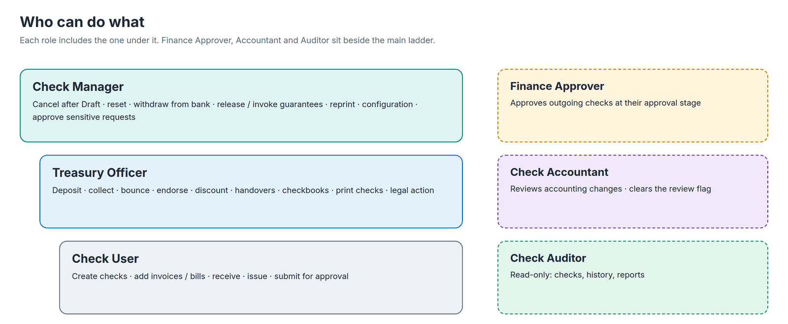
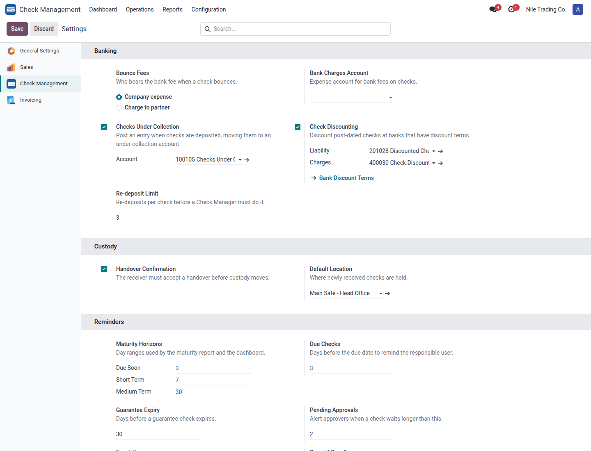
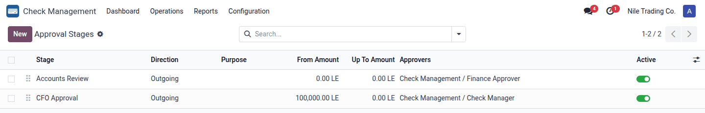
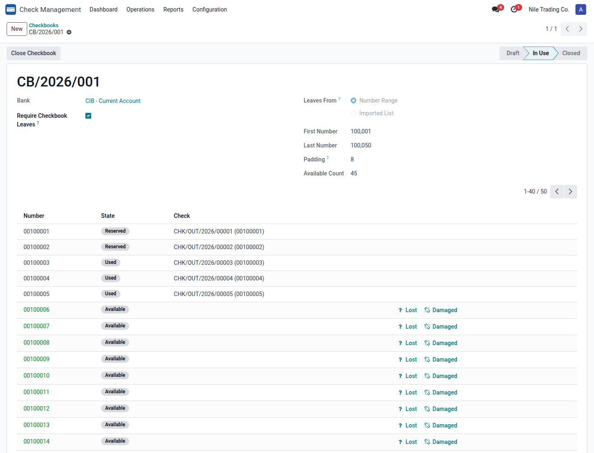
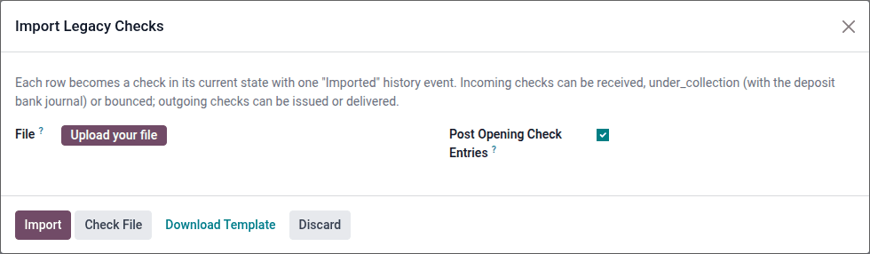

Getting started in 5 steps
1. Install
Install Check Management from Apps. The company needs a chart of accounts first. On install, and again on the first posting if anything is missing, the module creates what it needs: the Checks Receivable (PDC) and Checks Payable (PDC) accounts, a Checks Portfolio journal and the Check payment methods. You can replace any of them with your own accounts in the settings.
2. Give people a role
Open Settings → Users & Companies → Users, pick a user and tick their role in the Check Management section. Each role includes the one below it; Finance Approver, Check Accountant and Check Auditor are separate roles you add alongside.

3. Review the settings
Check Management → Configuration → Settings. The defaults work out of the box; these are the choices worth making on day one:
| Setting | What it decides |
|---|---|
| Invoice Settlement | At receipt / issue (default): the check settles the invoice the moment you receive or issue it, and the amount sits on a PDC account until the bank moves the money. At collection / clearing: the invoice stays open until the bank collects or clears the check. |
| Check Accounts / Checks Portfolio | The holding accounts and journal used for checks in hand and checks issued. |
| Checks Under Collection | Post an extra entry when checks are deposited, moving them to an under collection account. |
| Bounce Fees / Bank Charges Account | Whether a bank fee on a bounce is a company expense or charged to the customer. |
| Check Discounting | Enable discounting post-dated checks at banks, with the liability and charges accounts. |
| Re-deposit Limit | How many times a bounced check can be re-deposited before a Check Manager must do it. |
| Handover Confirmation / Default Location | Whether the receiver must accept a custody handover, and where new checks are held. |
| Approval Required / Segregation of Duties / Check Validity | Outgoing checks need approval before issue; people cannot approve checks they created; checks older than N months are flagged stale. |
| Foreign Currency Valuation | The rate date used to value foreign-currency checks in reports (receipt, due or collection date). Entries always use the rate of their own date. |
| Reminders / Escalation / Guarantee Memorandum | Reminder horizons in days, escalation to Check Managers, and off-balance entries for guarantee checks. |


4. Prepare the master data
Everything below lives under Check Management → Configuration (Check Manager role):
- Bounce Reasons: already loaded (insufficient funds, signature mismatch, account closed, payment stopped...). Add your bank's codes.
- Custody Locations: safes, branches and people that physically hold checks, each with a responsible user.
- Approval Stages: the approval steps for outgoing checks by amount range and purpose, each with its approver group. Without stages, one Finance Approval by the Finance Approver group is used.
- Sensitive Action Rules: actions such as cancelling after Draft, marking a check lost or releasing a guarantee that must be approved by a chosen group before they run.
- Bank Discount Terms: for each bank, the advance percentage, annual interest and fixed fee per check.
- Checkbooks (Operations → Checkbooks): register each checkbook with its number range (or Import Leaves for a list of leaf numbers) and click Start Using. The bank then requires a leaf on every outgoing check.


5. Bring in the checks you already have
Configuration → Import Legacy Checks: click Download Template, fill one row per check (direction, number, partner, amount, dates, bank, drawer account, purpose, current state, journal...), use Check File to validate it, then Import. Each check lands directly in its real state (received, under collection, bounced, issued or delivered) with one Imported history event. Untick Post Opening Check Entries if your opening balances already contain the checks.
